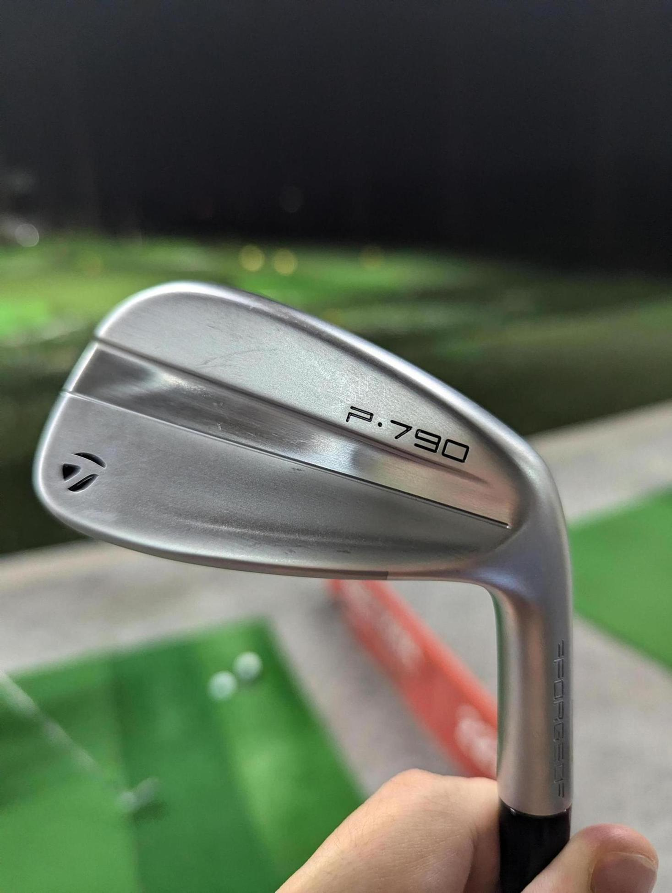

P790を試しに打ちっぱなしに行った。 シャフトが重いせいかすごく疲れる。
野球で最も重要な練習の一つが素振りなのは、素振りは握力やリストの強さ、下半身の強さなどといった、そもそも練習をするために必要な筋肉と基礎体力を養えるからだ。素振りができないやつは練習に参加しても体力がないので意味がない。 ゴルフも同じで、重い鉄の棒を振り回すための基本的な筋肉や握力がないと、いくらフォームだけきれいにしても手元がぶれてしまい、スイングの再現性を作れない。ゴルフの場合は止まっているボールを打つので、たまにまぐれでいいショットになることはあるだろうけど、むしろそれで上手くなってると勘違いするのは危険だ。
という考えで素振りばっかした。素振りは無料（打ちっぱなしは1球ごとに金がかかる）なのでコスパ最高。